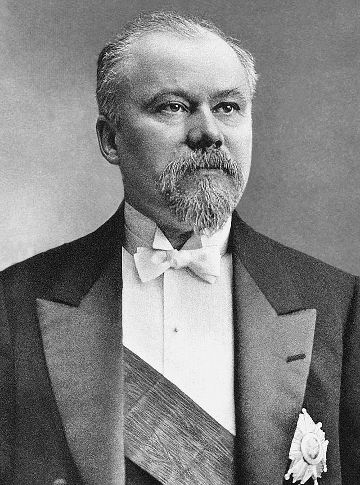
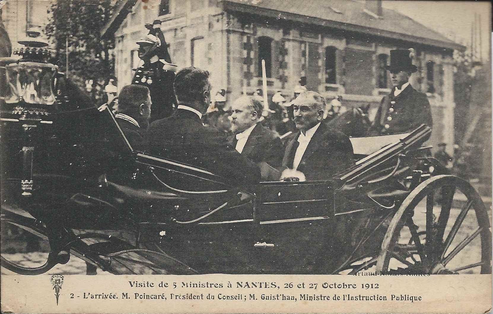

Presidente Frances Roymand Poincare
Nacido en Bar-le-Duc, Mosa, Francia, Raymond Poincaré era hijo de Nanine Marie Ficatier, una mujer profundamente religiosa[3] y Nicolas Antonin Hélène Poincaré, un distinguido funcionario y meteorólogo. Raymond también era primo de Henri Poincaré, el famoso matemático. Educado en la Universidad de París,[4] Raymond fue convocado al Colegio de Abogados de París y durante algún tiempo fue editor de derecho del Voltaire. A los 20 años se convirtió en el abogado más joven de Francia.[5] y fue nombrado secretario de la Conferencia del Colegio de Abogados de París. Como abogado, defendió con éxito a Julio Verne en una demanda por difamación presentada contra el famoso autor por el químico Eugène Turpin, inventor del explosivo melinita, quien afirmó que el personaje del "científico loco" en el libro de Verne Ante la bandera estaba basado en él. A la edad de 26 años, Poincaré fue elegido miembro de la Cámara de Diputados, convirtiéndose en el diputado más joven de la cámara

Trayectoria
Poincaré trabajó casi un año en el Ministerio de Agricultura cuando en 1887 fue elegido diputado por el departamento del Mosa.[6] Obtuvo una gran reputación en el parlamento como economista, y formó parte de las comisiones presupuestarias de 1890, 1891 y 1892. Sirvió como ministro de Educación, Bellas Artes y Religión en el primer gabinete de Charles Dupuy (abril a noviembre de 1893), y en los dos siguientes mandatos lo hizo como ministro de Finanzas. Fue nombrado ministro de Instrucción Pública en el gobierno de Alexandre Ribot. A pesar de haber sido excluido del gabinete radical que siguió a este, el proyecto de revisión de las penas capitales propuesto por el nuevo ministro estuvo basado en sus propuestas del año anterior. Fue nombrado vicepresidente de la cámara en el otoño de 1895 y, a pesar de la hostilidad de los radicales, conservó su puesto en 1896 y 1897.
Junto con otros seguidores del «oportunista» Léon Gambetta, Poincaré fundó la Alianza Democrática en 1902, que se convirtió en el partido más importante del centro-derecha durante la Tercera República Francesa. En 1906 regresó como ministro de Finanzas durante el breve ministerio de Sarrien. Durante su carrera política continuó el ejercicio de su profesión, y publicó varios volúmenes de ensayos sobre temas literarios y políticos. El «Poincarismo» se convirtió en un movimiento político, y fue el término utilizado por Georges Clemenceau en 1902 para definir a una generación de jóvenes políticos conservadores que habían perdido el idealismo de los fundadores de la república. Después de 1911, el término pasó a significar «renovación nacional» contra la amenaza alemana. Tras la Primera Guerra Mundial se refería al apoyo que brindó a intereses empresariales y financieros.[1]Poincaré fue conocido por su disputa de por vida con Georges Clemenceau. Clemenceau y Poincaré se detestaban absolutamente y se enzarzaron en una de las disputas más prolongadas de la política francesa. El historiador británico Anthony Adamthwaite describió a Poincaré como alguien que tenía una "obsesión con Clemenceau que rayaba en la paranoia" y como un "tipo frío cuya única pasión eran los gatos".

Acciones importantes de Raymond Poincaré
- Fue presidente de Francia (1913–1920): Gobernó durante la Primera Guerra Mundial y lideró políticamente al país.
- Fortaleció la alianza con Rusia: Apoyó firmemente la cooperación militar y diplomática con el Imperio ruso.
- Impulsó una política de defensa fuerte: Apoyó la ley que extendía el servicio militar obligatorio a tres años.
- Promovió la unidad nacional: Fomentó la cohesión política y social durante la guerra.
- Apoyó la recuperación de Alsacia y Lorena: Respaldó la reintegración de estos territorios a Francia tras la victoria.
- Presidió la reconstrucción del país: Supervisó la reconstrucción económica y territorial tras el conflicto.